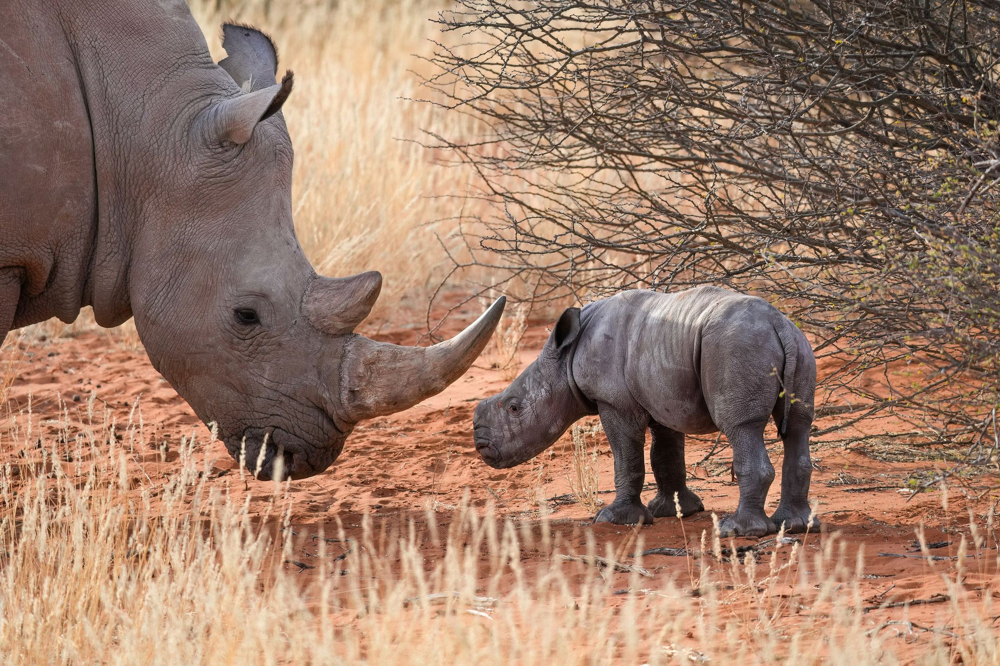

Goed nieuws uit het wild
Het wild komt terug.
Overal in Afrika brengen rangers, boeren, vissers en dorpen de natuur terug, en ze worden er zelf sterker van. Wildkracht laat zien hoe.
Witte neushoorn met haar kalf, Namibië · Foto: Giles Laurent, CC BY-SA 4.0
Van… naar…
Herstel is geen wensdenken. Het gebeurt al.
-
Van een leeggeschoten park
110.513
grote dieren geteld in Gorongosa, Mozambique (2024)
-
Van een paar honderd
1.063
berggorilla's bij de laatste telling in het Virunga-gebergte en Bwindi
-
Van een fokfarm
740+
neushoorns terug in het wild, met als doel 2.000 in tien jaar
-
Van kale akkers
±5 mln
hectare weer groen in Niger, door boeren zelf (schatting)
De projecten
8 projecten die werken, voor natuur én mensen
Elk verhaal begint bij de mensen die het werk doen. We vertellen wat er goed gaat, en eerlijk waar het nog beter kan.
De kaart
Waar het gebeurt
Van de Sahel tot de kust van Madagaskar. Klik op een punt om het project te bekijken.
Kies een project op de kaart.
Hoe wij kiezen
Wanneer noemen we een project geslaagd?
-
1
De natuur herstelt aantoonbaar
Er komen dieren terug, het bos groeit of de vangst neemt toe. Dat blijkt uit tellingen en onderzoek, niet uit mooie woorden.
-
2
Mensen in de buurt profiteren en beslissen mee
Er komen banen, scholen, inkomen en zeggenschap bij. Lokale rangers, boeren en vissers zijn de hoofdrolspelers.
-
3
We zijn eerlijk over de kanttekeningen
Geen project is perfect. Bij elk verhaal lees je ook wat er schuurt en wat er beter moet.
Wat kun jij doen
Drie dingen die echt verschil maken
-
Geef aan het werk ter plekke
Rangers, scholen en vergoedingen voor boeren kosten geld. Geef aan het algemene fonds of kies zelf een project.
-
Reis bewust
Ga je op safari? Kies parken en lodges die inkomsten delen met de dorpen in de buurt. Zo wordt natuur voor iedereen waardevol.
-
Vertel de goede verhalen door
Hoop is besmettelijk. Deel een project dat je raakt, met je vrienden, op je werk of in de klas van je kind.

Help het wild terug te komen
Geef aan het Wildkrachtfonds of kies zelf een project. Je ziet direct wat je bijdrage mogelijk maakt.
DoneerDit is een conceptwebsite: doneren is een schets en er wordt niets afgeschreven.
Olifant in Amboseli, Kenia · Foto: Diego Delso, CC BY-SA 4.0